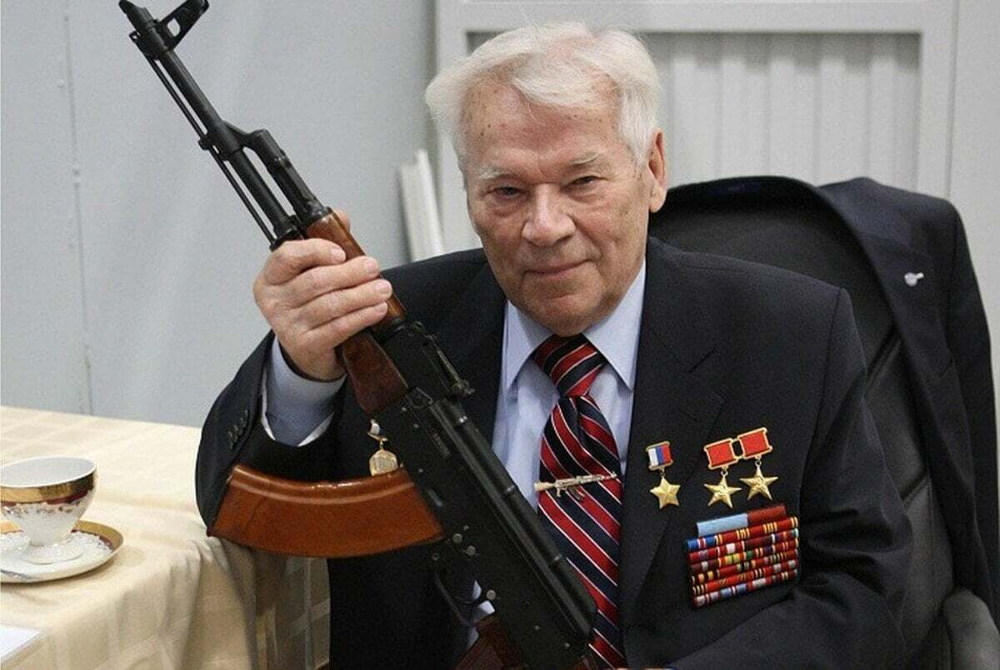

Советский и российский конструктор стрелкового оружия. Доктор технических наук, генерал-лейтенант, создатель всемирно известного автомата Калашникова 
10 ноября 1919 г
23 декабря 2013 г
Практически вся биография Михаила Калашникова посвящена созданию и модернизации стрелкового оружия. Конструктору-самоучке удалось создать автомат, которым на протяжении более семидесяти лет пользовались и пользуются армии 55 стран.